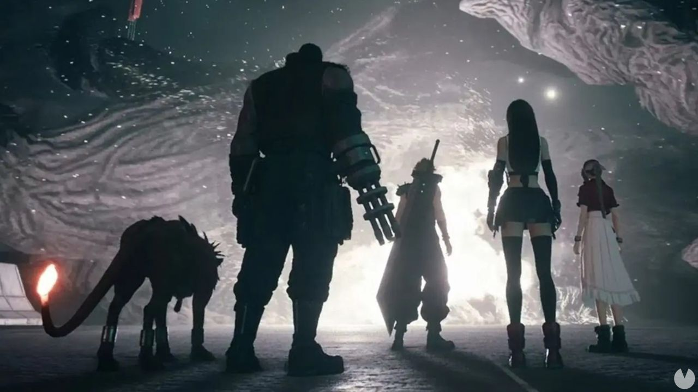

El productor de Final Fantasy 7 Remake quería más cambios drásticos respecto al original
admin | 2 julio, 2020 at 12:50
TweetFinal Fantasy VII Remake está siendo todo un éxito en ventas pese a que más de un fan ha acabado descontento con el tratamiento narrativo del remake de esta primera parte de la aventura original. Hay jugadores que no se han tomado a bien algunos cambios en el guión, sobre todo en la parte final del juego; una decisión polémica que, si hubiera sido por el productor del proyecto, habría afectado a más partes de la historia. Yoshinori Kitase, productor de Final Fantasy VII Remake, ha reconocido en una reciente entrevista concedida a Push Square que él imaginaba este remake con cambios más drásticos en la representación de la historia del original. Recordemos que este juego es el primero de varios episodios (indeterminados, según Square Enix) y que en él sólo se narran los hechos que en el Final Fantasy VII original transcurren en Midgar. La parte final de ese arco ha sido la que ha traído más cola por no ser fiel a la sucesión de hechos del original. Kitase ha dicho en la entrevista que él lo imaginaba todo más cambiado pero que los directores del juego no querían hacer modificaciones tan fuertes en la trama: "Personalmente me imaginaba un cambio general más acentuado, pero nuestro director, Tetsuya Nomura, y el co-drector, Naoki Hamaguchi, querían mantener los aspectos más recordados del original tanto como se pudiera", ha reconocido el productor. De hecho Yoshinori Kitase reconoce que finalmente el equipo al completo decidió no tomar el sendero del cambio dramático que proponía el productor, apostando por una alteración mínima del guión original: "Eventualmente el equipo de desarrollo decidió enfocarse en respetar el original al mismo tiempo que se le añadían elementos, asegurando un delicado equilibrio entre los dos", decía Kitase en la entrevista sin entrar a explicar qué tipo de cambios quería realizar él en la historia de Final Fantasy VII Remake. Como decíamos al principio, y pese a las críticas a sus compases finales, Final Fantasy VII Remake está siendo todo un éxito en venta y crítica. En nuestro análisis decimos de él que es "un espectacular y emocionante remake con el que revivir por todo lo alto el inicio de uno de los juegos más importantes y queridos de la historia". Si eres una de las personas que se ha hecho con él y quiere sacar el 100% del juego te recomendamos echar un vistazo a nuestra guía.
